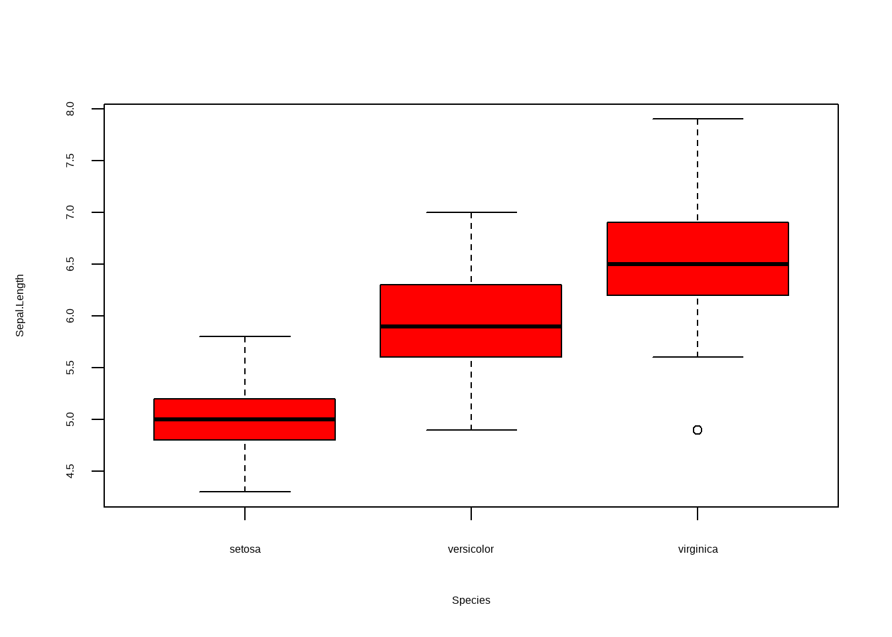
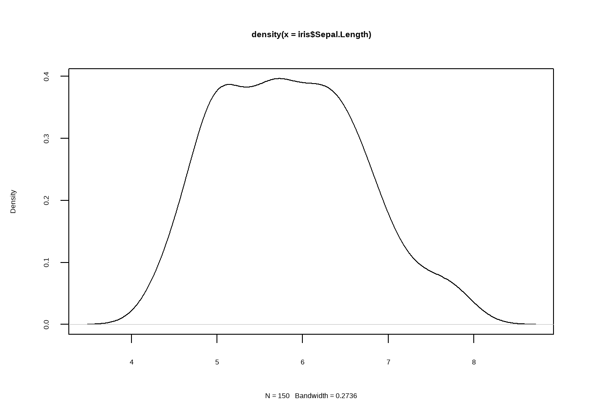
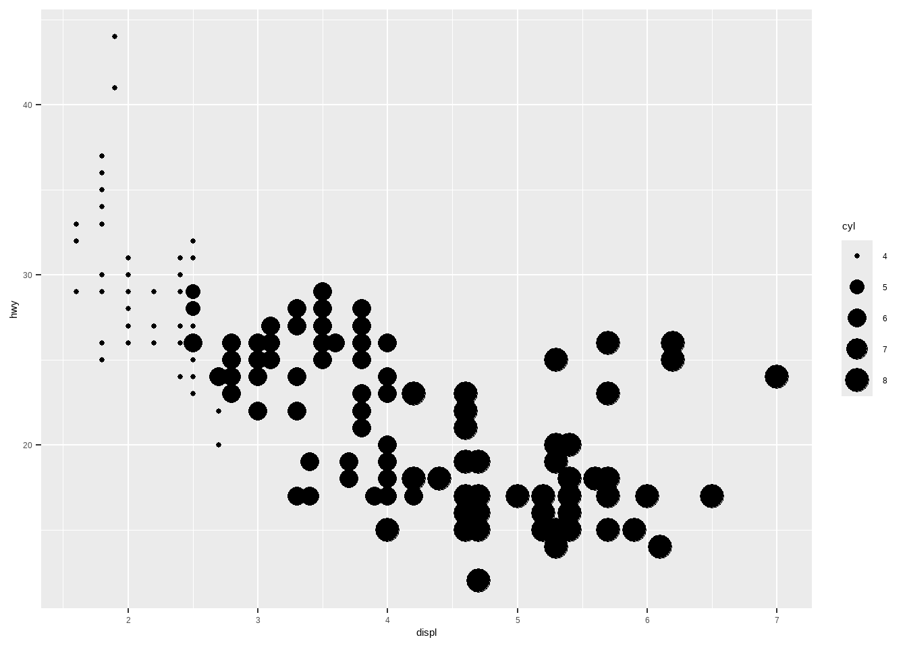
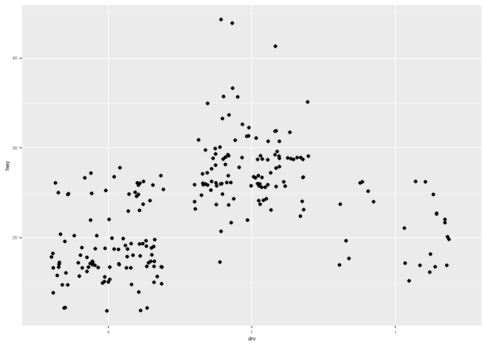
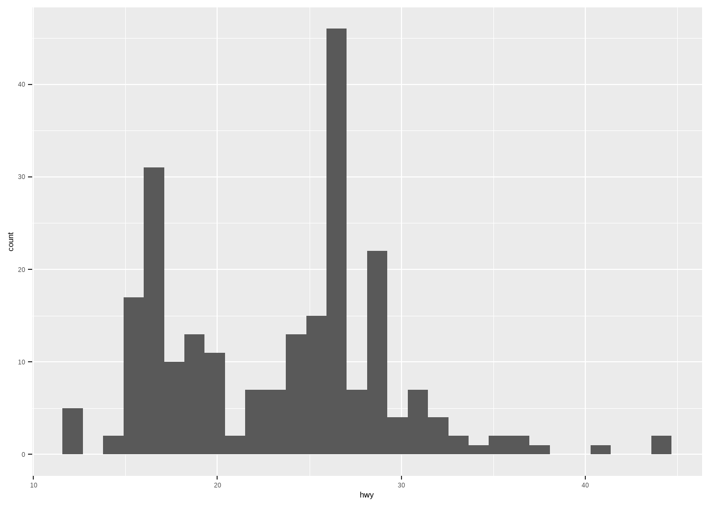

plot(1:10,1:10,
type = "l",
main = "这是一幅图",
sub = "这是副标题",
xlab = "这是横坐标",
ylab = "这是纵坐标")14 R绘图入门
R语言中主要有两类绘图系统，一个是R语言自己的基础绘图系统，即graphics包，另一个是grid绘图系统，大名鼎鼎的ggplot2就属于后者。
绘图是R语言的强项，各种统计图形都可以轻松拿捏，比如常见的：
- 散点图、条形图、箱线图、折线图、小提琴图等；
- 热图、网络图、流程图；
- 森林图、三线表；
- 地图；
- 解剖图；
- ……
但是R不能绘制类似Graphical Abstract的机制图哈。
下面给大家分别介绍基础绘图和ggplot2绘图。
14.1 base plot
主要是通过graphics包实现的，这个包是R语言自带的，不需要加载也能直接用。
基础绘图系统超级无敌繁琐，可以实现对图形细节的超级无敌控制！但是相比于ggplot2来说，使用语法更复杂。
下面给大家展示部分图形示例。
14.1.1 散点图
plot(1:10,1:10,
type = "p",
main = "这是一幅图",
sub = "这是副标题",
xlab = "这是横坐标",
ylab = "这是纵坐标")
plot(c(2,4,5,6,3),c(1,3,5,3,6))14.1.2 折线图
14.1.3 点线图
plot(1:10,1:10,
type = "b",
main = "这是一幅图",
sub = "这是副标题",
xlab = "这是横坐标",
ylab = "这是纵坐标")更多用法可参考帮助文档：
?plot14.1.4 条形图
tmp <- data.frame(`人数` = c(23,18,36,27,19),
`类型` = c("糖尿病","脑梗死","心肌梗死","支气管炎","肺炎"))
barplot(`人数` ~ `类型`, data = tmp)
barplot(`人数` ~ `类型`, data = tmp, horiz = T)14.1.5 箱线图
boxplot(Sepal.Length ~ Species, data = iris)
boxplot(Sepal.Length ~ Species, data = iris, notch = T)
boxplot(Sepal.Length ~ Species, data = iris, horizontal = T)
boxplot(Sepal.Length ~ Species, data = iris, col = "red")
14.1.6 直方图
hist(iris$Sepal.Length)
hist(iris$Sepal.Length, freq = F)14.1.7 密度图
plot(density(iris$Sepal.Length))
14.1.8 直方图+密度图
hist(iris$Sepal.Length, freq = F)
lines(density(iris$Sepal.Length))基础绘图自由度极高，你可以往图形中添加各种元素，可以添加在图形中的任何位置。这种绘图方式非常的“计算机”：
- 在A位置画一个点
- 在B位置画一条线
- 在C位置画一个图例
- 在D位置添加一段文字
- ……
14.1.9 美图展示
基础绘图都这么丑吗？当然不是！这还得看个人的审美水平和代码水平。
下面给大家展示几个大佬用base-plot绘制的图形。以下图形全部都是由base-plot直接绘制的，未经任何PS等软件修改，来自Github
给大家展示一下金字塔图的绘制方法。
data = read.table("datasets/02-splitbarplot_PopGermany.csv", sep = ",", header = TRUE)
max_count = max(data[,c("male", "female")]) #Maximum value
# 设置画布
par(mar = c(2, 3, 2, 1))
plot( # 确定主体
NA,
xlim = c(-max_count, max_count),
ylim = c(1, nrow(data)),
frame.plot = FALSE,
axes = FALSE,
xlab = NA,
ylab = NA
)
axis( # 添加y轴
side = 2,
at = 1:nrow(data)+0.4,
labels = rev(data$age.span),
tick = FALSE,
cex.axis = 0.8, las = 2, line = -1, col = "#34495e"
)
# 写循环，一行一行的画
for(i in 1:nrow(data)){
row_idx = rev(1:nrow(data))[i] #Plot the data from bottom to top
# 画左侧灰色背景
rect(xleft = -max_count, ybottom = i, xright = -10, ytop = i+0.9, col = "#ecf0f1", border = NA)
# 画左侧蓝色条形
rect(
xleft = -data[row_idx, "male"],
xright = -10,
ybottom = i,
ytop = i + 0.9, col = "#2980b9", border = NA,
)
pretty_pop_male = ifelse(test = data[row_idx, 2] < 1e6,
yes = paste0(round(data[row_idx, 2] / 1000, 1), "k"),
no = paste0(round(data[row_idx, 2] / 1e6, 1), "m"))
# 加左侧数字
if(data[row_idx, 2] < 1e6){
text(
x = -data[row_idx, "male"],
y = i + 0.4,
labels = pretty_pop_male,
pos = 2,
xpd = TRUE, cex = 0.7, col = "black"
)
}else{
text(
x = -500,
y = i + 0.4,
labels = pretty_pop_male,
pos = 2,
xpd = TRUE, cex = 0.7, col = "white"
)
}
# 画右侧
rect(xleft = -10, ybottom = i, xright = max_count, ytop = i+0.9, col = "#ecf0f1", border = NA)
rect(
xleft = data[row_idx, "female"],
xright = 10,
ybottom = i,
ytop = i + 0.9, col = "#c0392b", border = NA
)
pretty_pop_female = ifelse(test = data[row_idx, 3] < 1054000, # 1e6我改成1054000
yes = paste0(round(data[row_idx, 3] / 1000, 1), "k"),
no = paste0(round(data[row_idx, 3] / 1e6, 1), "m"))
if(data[row_idx, 3] < 1054000){ # 这里本来是取的第2列，我改成第3列,1e6改成1054000
text(
x = data[row_idx, "female"],
y = i + 0.4,
labels = pretty_pop_female, # 这里本来是male
pos = 4,
xpd = TRUE, cex = 0.7, col = "black"
)
}else{
text(
x = 500,
y = i + 0.4,
labels = pretty_pop_female,
pos = 4,
xpd = TRUE, cex = 0.7, col = "white"
)
}
}
text(x = -max_count, y = nrow(data)+0.45, labels = "male", adj = 0, cex = 0.8, font = 1)
text(x = max_count, y = nrow(data)+0.45, labels = "female", adj = 1, cex = 0.8, font = 1)
title(main = "Population projection for Germany, 2020", line = 1, adj = 0, col.main = "#2c3e50")
title(main = NA, sub = "Projection from 2015\nbased on continued trend with higher immigration
", line = 1, font.sub = 3, cex.sub = 0.6, adj = 1, col.sub = "#7f8c8d")14.2 ggplot2
下面这段话很长，但我一定要给大家介绍！！！！
ggplot2的设计理念，也是它相比于base-plot优秀的地方：
每当我们看到一个新的软件，第一反应会是：为什么又要发明一个新软件？ggplot2是R世界里相对还比较年轻的一个包，在它之前，官方R已经有自己的基础图形系统（graphics包）和网格图形系统（grid包)，并且Deepayan-Sarkar也开发了lattice包，看起来R的世界对图形的支持已经足够强大了。那么我们不禁要问，为什么还要发明一套新的系统？
打个比方，想想我们小时候怎样学中文的。最开始的时候我们要识字，不认识字就没法阅读和写作，但我们并不是一直按照一个个汉字学习的，而是通过句子和具体的场景故事学习的。为什么不在小学时背六年字典呢？那样可能认识所有的汉字。原因很简单，光有单字，我们不会说话，也无法阅读和写作。我们缺的是什么？答案是对文字的组织能力，或者说语法。
R的基础图形系统基本上是一个“纸笔模型”，即：一块画布摆在面前，你可以在这里画几个点，在那里画几条线，指哪儿画哪儿。后来lattice包的出现稍微改善了这种情况，你可以说，我要画散点图或直方图，并且按照某个分类变量给图中的元素上色，此时数据才在画图中扮演了一定的中心角色，我们不用去想具体这个点要用什么颜色（颜色会根据变量自动生成)。但是lattice继承了R语言的一个糟糕特征，就是参数设置铺天盖地，足以让人窒息，光是一份xyplot()函数的帮助文档，恐怕就够我们消磨一天时间了，更重要的是,lattice仍然面向特定的统计图形，像基础图形系统一样，有直方图、箱线图、条形图等，它没有一套可以让数据分析者说话的语法。
那么数据分析者是怎样说话的呢？他们从来不会说这条线用#FEO9BE颜色，那个点用三角形状，他们只会说，把图中的线用数据中的职业类型变量上色，或图中点的形状对应性别变量。有时候他们画了一幅散点图，但马上他们发现这幅图太拥挤，最好是能具体看一下里面不同收入阶层的特征，所以他们会说，把这幅图拆成七幅小图，每幅图对应一个收入阶层。然后发现散点图的趋势不明显最好加上回归直线，看看回归模型反映的趋势是什么，或者发现图中离群点太多最好做一下对数变换，减少大数值对图形的主导性。
从始至终，数据分析者都在数据层面上思考问题，而不是拿着水彩笔和调色板在那里一笔一划作图，而计算机程序员则倾向于画点画线。Leland-Wilkinson的著作在理论上改善了这种状况，他提出了一套图形语法，让我们在考虑如何构建一幅图形的时候不再陷在具体的图形元素里面，而是把图形拆分为一些互相独立并且可以自由组合的成分。这套语法提出来之后他自己也做了一套软件，但显然这套软件没有被广泛采用；幸运的是，Hadley-Wickham在R语言中把这套想法巧妙地实现了。
为了说明这种语法的思想，我们考虑图形中的一个成分——坐标系。常见的坐标系有两种：笛卡尔坐标系和极坐标系。在语法中，它们属于一个成分，可自由拆卸替换。笛卡尔坐标系下的条形图实际上可以对应极坐标系下的饼图，因为条形图的高可以对应饼图的角度，本质上没什么区别。因此在ggplot2中，从一幅条形图过渡到饼图，只需要加极少量的代码，把坐标系换一下就可以了。如果我们用纸笔模型，则可以想象，这完全是不同的两幅图，一幅图里面要画的是矩形，另一幅图要画扇形。
更多的细节请看书，这里我们只是简略说明用语法画图对用纸笔画图来说在思维上的优越性；前者是说话后者是说字。
数就是图，图就是数
14.2.1 示例数据
使用ggplot2自带的数据，这是一个不同汽车的耗油量数据。
library(ggplot2)
mpg
## # A tibble: 234 × 11
## manufacturer model displ year cyl trans drv cty hwy fl class
## <chr> <chr> <dbl> <int> <int> <chr> <chr> <int> <int> <chr> <chr>
## 1 audi a4 1.8 1999 4 auto… f 18 29 p comp…
## 2 audi a4 1.8 1999 4 manu… f 21 29 p comp…
## 3 audi a4 2 2008 4 manu… f 20 31 p comp…
## 4 audi a4 2 2008 4 auto… f 21 30 p comp…
## 5 audi a4 2.8 1999 6 auto… f 16 26 p comp…
## 6 audi a4 2.8 1999 6 manu… f 18 26 p comp…
## 7 audi a4 3.1 2008 6 auto… f 18 27 p comp…
## 8 audi a4 quattro 1.8 1999 4 manu… 4 18 26 p comp…
## 9 audi a4 quattro 1.8 1999 4 auto… 4 16 25 p comp…
## 10 audi a4 quattro 2 2008 4 manu… 4 20 28 p comp…
## # ℹ 224 more rowscty：城市hwy：耗油量displ：发动机排量drv：驱动系统，前驱、后驱、四驱model：车辆型号，共38种车型cyl：发动机缸数class：车辆类型，双座、SUV、小型汽车等
该数据集包含很多问题，比如引擎大小和油耗量有什么关系？是否有部分制造商更关注油耗问题？过去几年汽车油耗量有没有明显增加？
14.2.2 数据、映射、几何对象
ggplot2图形的3个基本构成：
- 数据；
- 图形属性映射：设置变量如何映射到图形属性上，比如：x轴是什么？y轴是什么？颜色表示什么？形状表示什么？大小表示什么？
- 几何对象：你要使用的图形元素，点、线条、多边形等
ggplot(data = mpg, # 数据
mapping = aes(x = displ, y = hwy))+ # 图形属性映射
geom_point() # 几何对象
通过+添加图层，以ggplot()开头，这是典型的ggplot2使用方法，全都一样。
1行代码就对应一个图层，层层叠加，靠后的图层在上面。
一步一步的运行，更方便理解图层的概念：
ggplot()
ggplot(data = mpg, # 数据
mapping = aes(x = displ, y = hwy))ggplot(data = mpg, # 数据
mapping = aes(x = displ, y = hwy))+ # 图形属性映射
geom_point() # 几何对象14.2.3 颜色、大小、形状和其他图形属性
为了展示更多信息，我们可以调整其他图形属性，比如：颜色、形状、大小等。
将车辆类型映射为颜色（用不同的颜色表示不同的车辆类型）：
ggplot(mpg, aes(displ, hwy, color = class))+
geom_point()用不同的形状表示驱动方式：
ggplot(mpg, aes(displ, hwy, shape = drv))+
geom_point()用不同的大小表示发动机缸数：
ggplot(mpg, aes(displ, hwy, size = cyl))+
geom_point()
14.2.4 标度
标度（scale）可以对颜色、大小、形状等属性进行更改。前面用我们不同的图形属性表示不同的变量，通过标度可以进行具体的修改。比如：
- 用颜色表示车辆类型，到底用哪种颜色？
- 用形状表示驱动方式，到底用哪几种形状？
- 用点的大小表示汽车缸数，那点的大小是从多大到多大？
下面这张图是没修改的默认图形属性：
ggplot(mpg, aes(displ, hwy, size = cyl, shape = drv, color = class))+
geom_point()如果我们想要修改颜色，怎么办？通过标度修改即可。
- 修改颜色：
scale_color_xxx - 修改大小：
scale_size_xxx - 修改形状：
scale_shape_xxx - …….(?scale_)
ggplot(mpg, aes(displ, hwy, size = cyl, shape = drv, color = class))+
geom_point()+
scale_size_continuous(range = c(2,8))+ # 修改大小
scale_color_brewer()+ # 修改颜色
scale_shape_manual(values = c(15:17)) # 修改形状形状有20+种：https://ggplot2.tidyverse.org/reference/scale_shape.html
14.2.5 分面
对于分类变量，比如class，可以使用不同的颜色、形状等表示，还可以使用分面的形式表示。
ggplot(mpg, aes(displ, hwy))+
geom_point()+
facet_wrap(vars(class)) # 分面14.2.6 几何对象
ggplot2几乎覆盖了所有的图形类型，比如常见的：
- 散点图
- 折线图
- 条形图
- 直方图
- 密度图
- 箱线图
- 小提琴图
- 热图
- 等高线图
- ……
只要修改geom_xxx即可，非常简单。
比如添加一条拟合线就用geom_smooth即可，不同的geom_xxx有不同的参数：
ggplot(mpg, aes(displ, hwy))+
geom_point()+
geom_smooth() # 添加拟合线
## `geom_smooth()` using method = 'loess' and formula = 'y ~ x'
ggplot(mpg, aes(displ, hwy))+
geom_point()+
geom_smooth(span = 0.2) # 修改平滑度
## `geom_smooth()` using method = 'loess' and formula = 'y ~ x'
ggplot(mpg, aes(displ, hwy))+
geom_point()+
geom_smooth(method = "lm") # 修改方法，默认是loess
## `geom_smooth()` using formula = 'y ~ x'绘制散点图：
ggplot(mpg, aes(drv, hwy))+
geom_point() # 散点图有时点太多会重叠，可以增加随机抖动，让点分散开，不会该变原有的数据分布，使布局更加合理：
ggplot(mpg, aes(drv, hwy))+
geom_jitter() # 抖动散点图
箱线图：
ggplot(mpg, aes(drv, hwy))+
geom_boxplot()小提琴图：
ggplot(mpg, aes(drv, hwy))+
geom_violin()直方图：
ggplot(mpg, aes(hwy))+
geom_histogram()
## `stat_bin()` using `bins = 30`. Pick better value with `binwidth`.
频数多边形图：
ggplot(mpg, aes(hwy))+
geom_freqpoly()
## `stat_bin()` using `bins = 30`. Pick better value with `binwidth`.密度图：
ggplot(mpg, aes(hwy))+
geom_density()条形图：
ggplot(mpg, aes(manufacturer))+
geom_bar()上面的条形图的映射中只有一个manufacturer变量，此时ggplot2会自动给你计算每个类型的数量：
table(mpg$manufacturer)
##
## audi chevrolet dodge ford honda hyundai jeep
## 18 19 37 25 9 14 8
## land rover lincoln mercury nissan pontiac subaru toyota
## 4 3 4 13 5 14 34
## volkswagen
## 27但多数情况下都是用两个变量的，其中1个变量是数量，不需要它帮我们计算，此时需要加stat = "identity"参数：
drugs <- data.frame(
drug = c("a", "b", "c"),
effect = c(4.2, 9.7, 6.1)
)
ggplot(drugs, aes(drug, effect)) +
geom_bar(stat = "identity")14.2.7 坐标轴
坐标轴的各种细节都可以修改，比如标题、标签、颜色、粗细等。
# 默认坐标轴标签
ggplot(mpg, aes(cty, hwy)) +
geom_point(alpha = 1 / 3)
# 修改坐标轴标签
ggplot(mpg, aes(cty, hwy)) +
geom_point(alpha = 1 / 3) +
xlab("city driving (mpg)") +
ylab("highway driving (mpg)")
# 移除坐标轴标签
ggplot(mpg, aes(cty, hwy)) +
geom_point(alpha = 1 / 3) +
xlab(NULL) +
ylab(NULL)14.2.8 主题
用于修改各种细节。
p <- ggplot(mpg, aes(drv, hwy, color = drv))+
geom_boxplot()
pggplot2自带一些默认主题：
p+theme_bw()
p+theme_classic()所有细节都可以修改：
14.2.9 保存图片
ggplot(mpg, aes(displ, hwy, colour = factor(cyl))) +
geom_point()
# 默认保存最后一次绘制的图形
ggsave("plot.png", width = 5, height = 5)14.2.10 扩展包
- 100+免费的
ggplot2扩展包：https://exts.ggplot2.tidyverse.org/gallery/
14.2.11 金字塔图
使用ggplot2绘制上面的金字塔图。
data = read.table("datasets/02-splitbarplot_PopGermany.csv", sep = ",", header = TRUE)
library(tidyr)
data <- pivot_longer(data, cols = 2:3,names_to = "group",values_to = "values")
data$values <- ifelse(data$group=="male",-data$values,data$values)
library(ggplot2)
library(scales)
ggplot(data)+
geom_bar(stat = "identity",aes(values, age.span,fill = group))+
scale_fill_manual(values = c("#C0392B","#2980B9"),guide="none")+
annotate("text",x=-Inf,y=Inf,label="male",hjust=-0.2,vjust=1)+
annotate("text",x=Inf,y=Inf,label="female",hjust=1.2,vjust=1)+
annotate("text",
x=ifelse(data[7:40,]$group=="male",-150000,150000),
y=data[7:40,]$age.span,
label=paste0(round(abs(data[7:40,]$values)/1000000,1),"m"),
color="white",size=3,
hjust=ifelse(data[7:40,]$group=="male",1,0))+
annotate("text",
x=ifelse(data[1:6,]$group=="male",
data[1:6,]$values-150000,
data[1:6,]$values+150000),
y=data[1:6,]$age.span,
label=paste0(round(abs(data[1:6,]$values)/1000,1),"k"),
color="black",size=3,
hjust=ifelse(data[1:6,]$group=="male",1,0))+
labs(x=NULL,y=NULL,
caption = "Projection from 2015 \n based on continued trend with higher immigration")+
theme(panel.grid.minor.x = element_blank(),
panel.grid.major.x = element_blank(),
#panel.grid.major.y = element_blank(),
axis.text.x = element_blank(),
axis.ticks = element_blank(),
axis.text.y = element_text(color="black"),
plot.caption = element_text(color = "gray50",face = 3))14.2.12 参考资料
前两个是ggplot2参考资料，唯2真神！！
- 《ggplot2：数据分析与图形艺术》：https://ggplot2-book.org/
- 《R数据可视化手册》：https://r-graphics.org/
- 《R绘图系统》
免费的R语言绘图网站：
- https://r-charts.com/
- https://r-graph-gallery.com/